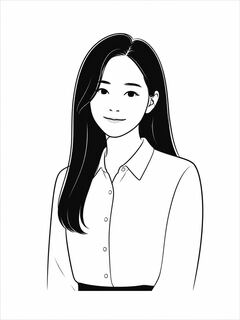
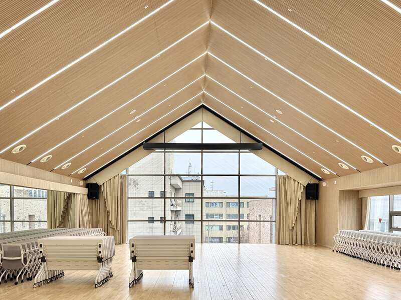
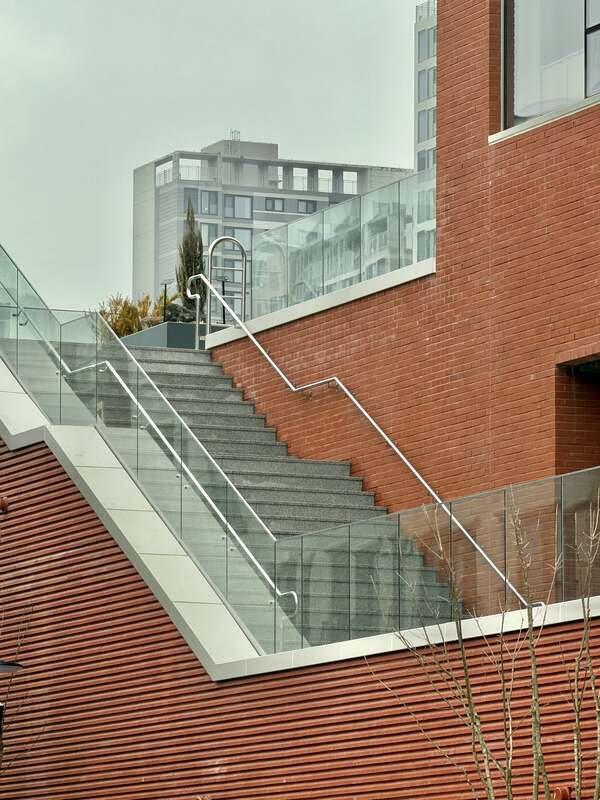
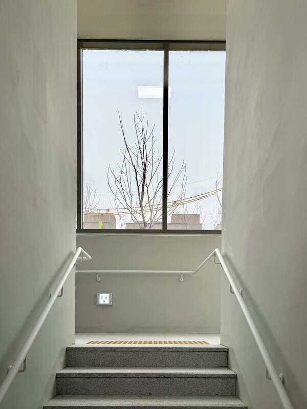
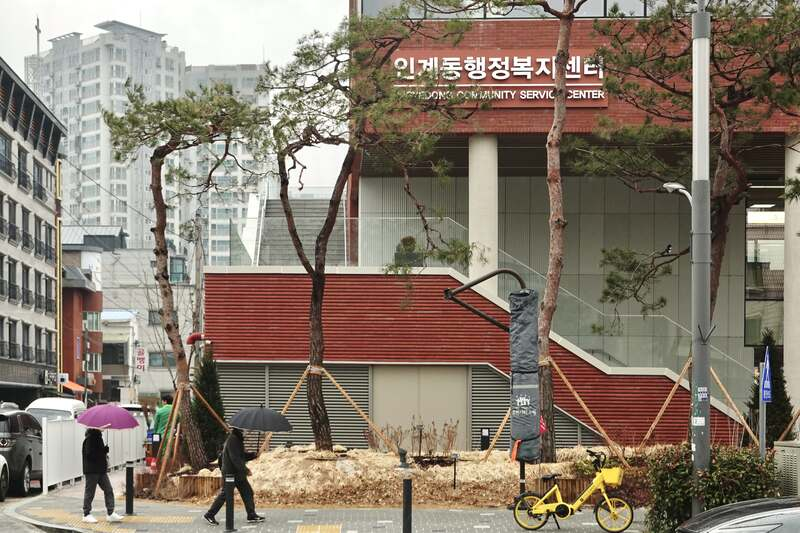
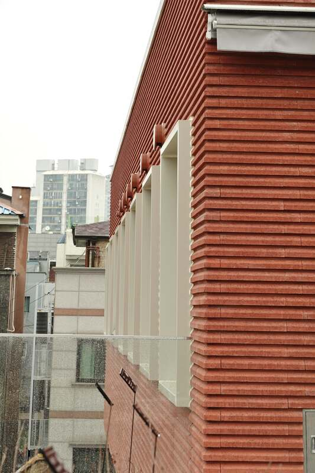
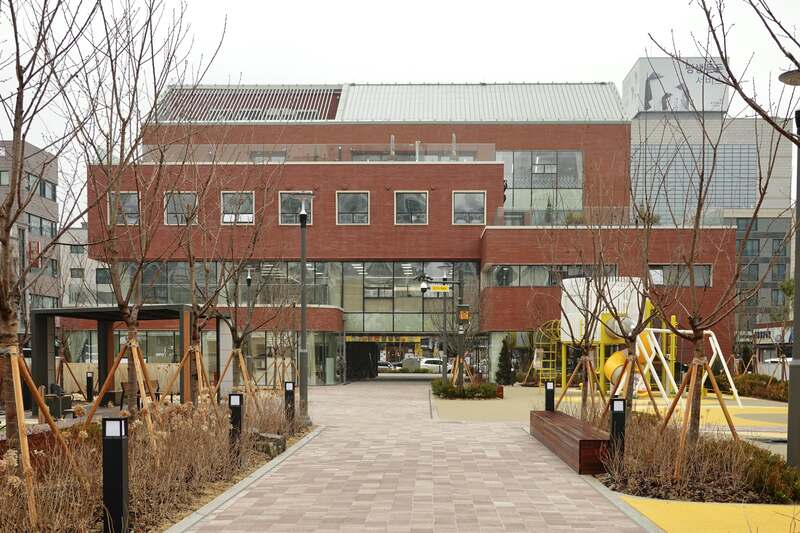
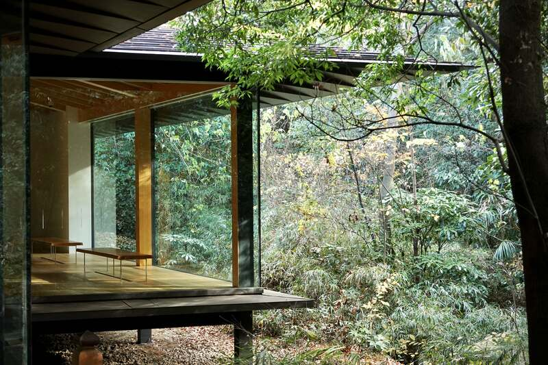

Profile

- Name
- 김지예 · Kim Ji Ye
- Birth
- 2001.01.02
- Education
- 선문대학교 건축사회환경공학부
건축학전공(5년제) - Focus
- 공공건축 · 현상설계
안녕하세요, 건축 디자이너 김지예입니다. "빈 공간이 아닌 채워질 가능성을 만든다"는 태도로 설계에 임합니다. 대지가 가진 조건과 맥락을 읽어내고, 그 안에서 아직 드러나지 않은 가능성을 공간의 언어로 구체화하는 것을 제 역할이라고 생각합니다.
(주)에이아이알건축사사무소에서 현상설계부터 실시설계까지 폭넓은 스케일의 프로젝트를 담당해왔습니다. 20여 건의 현상설계에 참여했고, 공공청사(인계동 행정복지센터), 교육시설(서울 영파여자중학교), 주민자치시설(정릉3동 주민센터) 등 서로 다른 프로그램의 공공건축을 다뤄왔습니다.
아이디어를 다이어그램으로 구조화하는 초기 단계부터 모델링, 패널, 실시설계 도서 작성, 나아가 시공 단계의 상세 협의까지 — 하나의 프로젝트가 완성되기까지의 전 과정을 직접 책임지는 것을 원칙으로 삼고 있습니다. 설계자의 의도가 도면에서 그치지 않고 실제 공간으로 정확히 구현되는지를 끝까지 확인합니다.
Skills
Projects
1st
낯선 익숙함
정릉3동주민센터 공용청사 신축 설계공모북한산 자락 구릉지형 위 불규칙한 대지와 레벨차를 반영한 당선작. 계단, 난간, 벽돌 등 정릉동의 익숙한 도시적 풍경 요소를 현대적으로 재해석했습니다. 주민자치·민원행정·커뮤니티 3개 프로그램을 층별로 구성하고, 열린 외부공간을 통해 서로 다른 레벨을 연결했습니다.
2nd
3 GROUNDS
향남 청소년 문화의 집 설계공모공원과 보행로가 만나는 열린 부지에 위치한 청소년 문화시설. 3개 층에 각기 다른 성격의 그라운드(Park·Play·Culture Ground)를 두어 다양한 활동 그룹의 시설 활용도를 극대화하는 개방적 구조를 제안했습니다.
2nd
자연이 품은 학교, 학교가 품은 마당
제주 서부중학교 신축공사 설계공모숲과 녹지로 둘러싸인 대지 위, 교실과 외부공간이 유기적으로 연결된 'Learning Community'를 제안했습니다. 건폐율 20%로 자연을 최대한 보존하며, 마당이 산책로처럼 학생들의 일상적 학습·놀이 동선이 되도록 계획했습니다.
3rd
LIBRARY IN FOREST
고양 백석도서관 리모델링 설계공모폐쇄적이었던 기존 원형 도서관을 공원과 도시의 경계에서 다시 열었습니다. 전면은 광장화하고 후면은 숲·마당과 연결해, 채광이 좋은 후면을 도서관의 마당이자 백석공원 산자락 능선을 끌어들이는 열람공간으로 만들었습니다.
인계동 행정복지센터 건립공사
설계용역 · 설계의도구현발주처·시공사와 협의하며 설계 의도를 실제 시공에 반영한 프로젝트. 골조 시공 전 배관 검토, 디자인블럭 상세도 3D 모델링 등 실무 디테일 작업을 직접 수행하며 시공 단계의 협업 역량을 키웠습니다.
영파여자중학교 그린스마트미래학교
개축사업 · 기본/중간/실시설계기본설계 단계부터 참여한 개축 프로젝트. 창호도, 확장실 도면, 입면도, 3D 모델링, 단면도 작성 등 도면 구성 전반에 참여하며 실무 역량을 크게 끌어올린 프로젝트입니다.
Other Competition Works
개인
Recreate A City
동묘 Re&Up 사이클 센터 · Design Studio 9패스트패션으로 급증하는 의류 폐기물 문제에 주목해, 동묘 벼룩시장 일대에 재활용·새활용 산업 허브가 될 Re&Up 사이클 센터를 제안했습니다. 폐의류의 수거–분류–재판매–연구로 이어지는 순환 과정을 판매·교육·연구 영역으로 조직하고, 동묘공원과 청계천을 잇는 축으로 방문객 동선을 설계했습니다.
팀 · 입선
잃어버린 이화를 찾다
성환 이화시장 재창조 · 경기도 건축문화상신도심 발달로 쇠퇴한 천안 성환읍 이화시장의 도시재생을 제안한 팀 프로젝트. 문화예술거리·글라스스트리트·시장-5일장거리 세 거리를 연결해 상인과 방문객의 동선을 재구성하고, 청년 창업공간 Start-Up Park를 계획했습니다. 최종 발표와 설계보고서 작성을 담당했습니다.
개인
Well-aging Silver House
은퇴자를 위한 공동주택 · Design Studio 8평균 기대수명 증가에 따라 은퇴 이후 삶의 목표를 함께 세울 수 있는 커뮤니티 공동주택을 제안했습니다. 동과 동 사이 유휴공간을 공유주방과 커뮤니티 공간으로 계획해, 각 세대에 흩어진 주민이 자연스럽게 모이는 구조를 설계했습니다.
팀 · 입선
영천강 길을 따라 모도이다
영현면 커뮤니티센터 · 한국농촌건축대전초고령화로 침체된 고성군 영현면에 청년과 노인이 공생할 수 있는 커뮤니티센터를 제안한 팀 프로젝트. 지역 상징물인 국화와 은행나무를 모티브로 1층엔 공생학습 공간을, 2~3층엔 주민 문화공간을 배치하고 중정으로 모든 층을 연결했습니다.
개인
트랙 위에서 자유를 얻다
아산 당정면 초등학교 · Design Studio 5정적인 학습 공간에 머물던 기존 초등학교에서 벗어나, 옥상 트랙을 중심으로 자연 속에서 몸으로 배우는 동적인 학습 공간을 제안했습니다. 동선축을 기준으로 정적·동적 공간을 분리하고, 1층 매스를 비워 외부와 연결되는 열린 공간을 만들었습니다.
Photo
사진 촬영은 오래된 취미입니다. 일상에서 마주치는 빛과 구도, 재료의 질감을 담아두는 습관이 공간을 보는 시선에도 영향을 줍니다.

인계동 행정복지센터
인계동 행정복지센터
인계동 행정복지센터
인계동 행정복지센터
인계동 행정복지센터
인계동 행정복지센터
메이지신궁뮤지엄- jingye131313@gmail.com
- Mobile
- 010-4692-9247
- Address
- 서울특별시 동대문구 한천로 63길 10
- @jirieom1.3